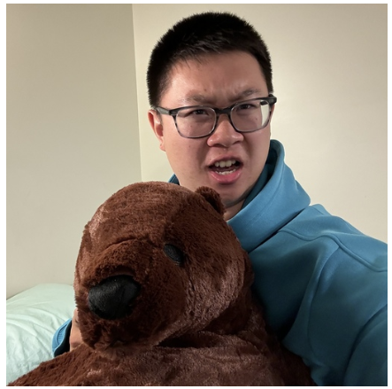
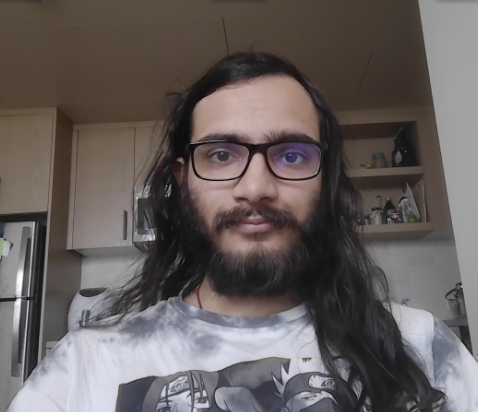

Team Members
Joey Tai Phung
Joey worked on the game logic using python and ROS nodes for each function of the project. Currently a fourth year EECS major
Brian Leong
Brian was in charge of the computer vision detection node and also helped in developing game logic. Currently a fourth year EECS major

Benji Xu
Benji worked on gameplay and path planning nodes. Currently a sophomore EECS major

Subrat Tripathi
Subrat implemented the AI for the project. Currently a senior EECS major.
Neil Solanki
Neil helped in designing the grippers for the Sawyer. Currently a senior EECS major.